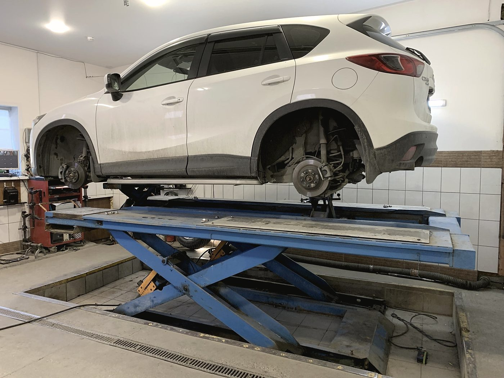
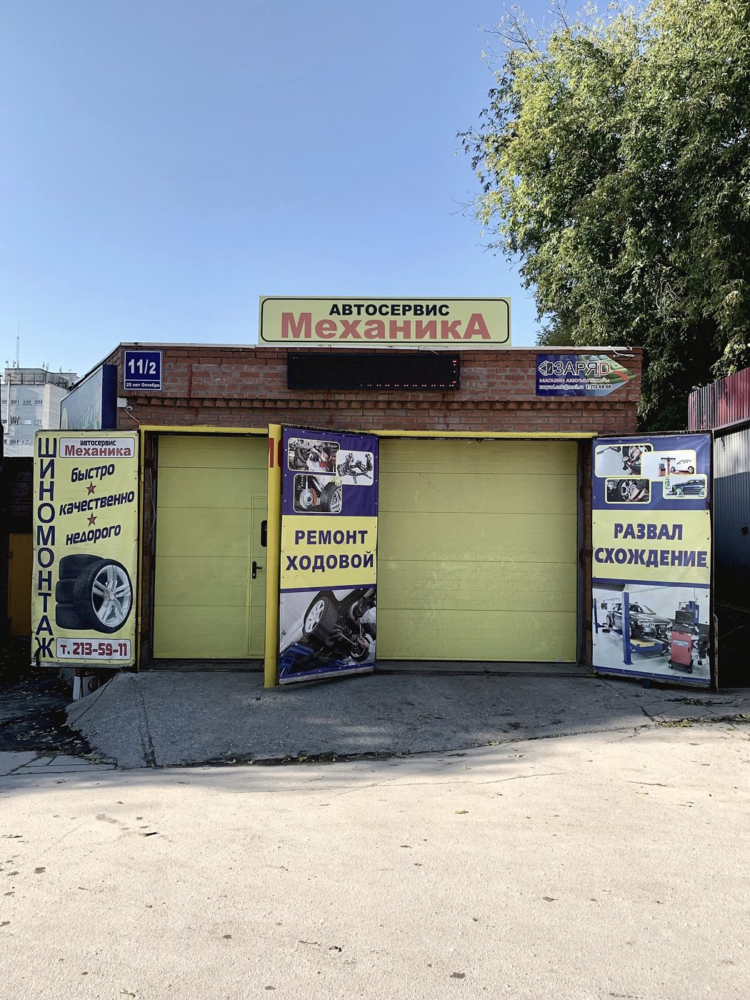
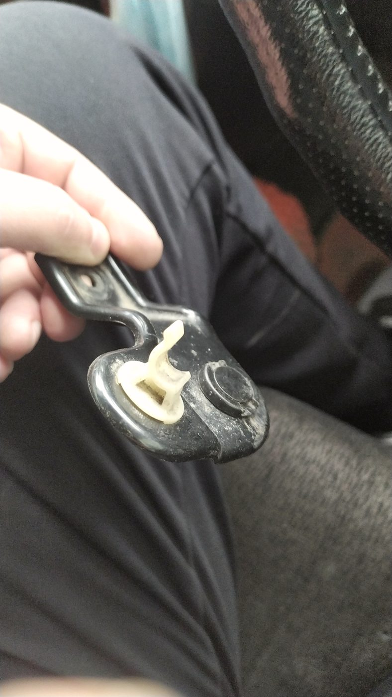
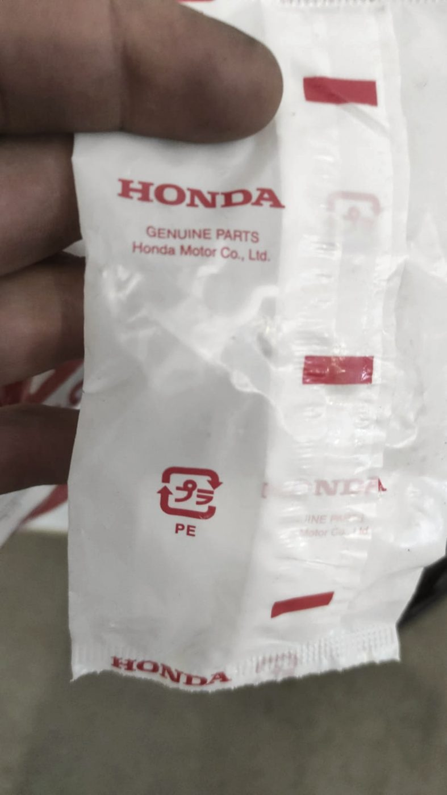
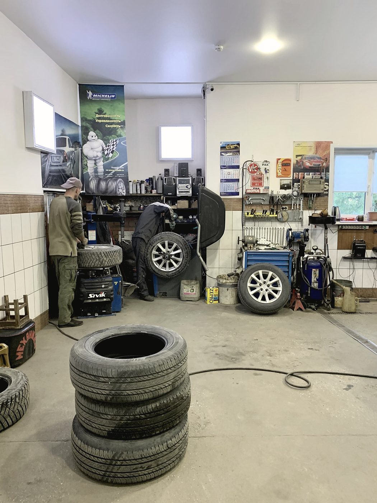
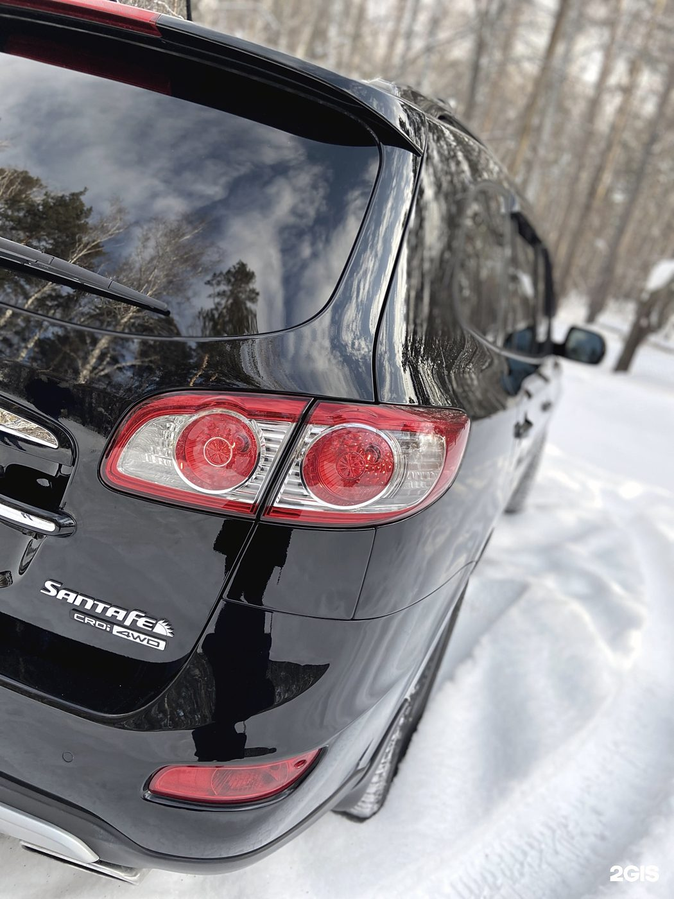
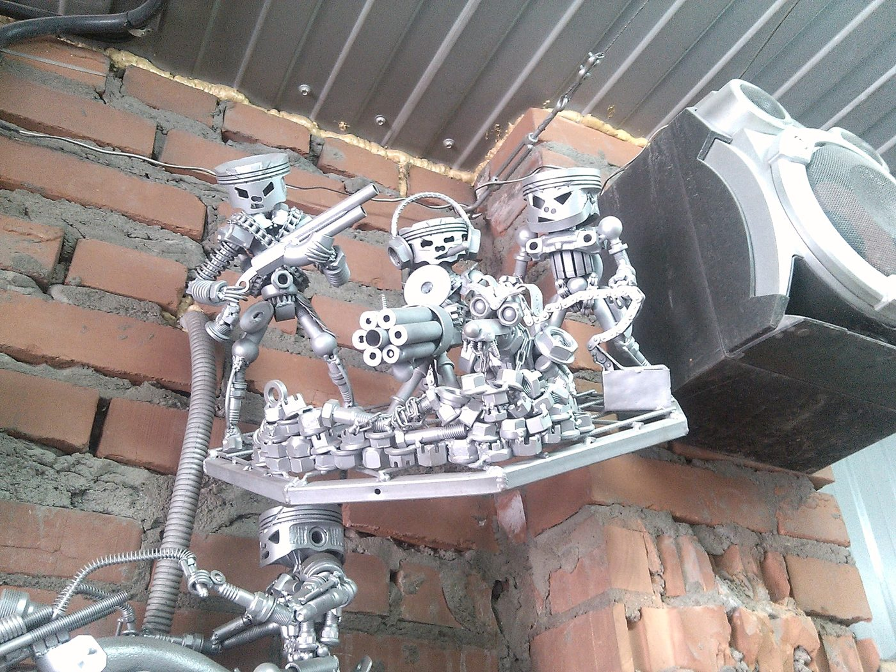
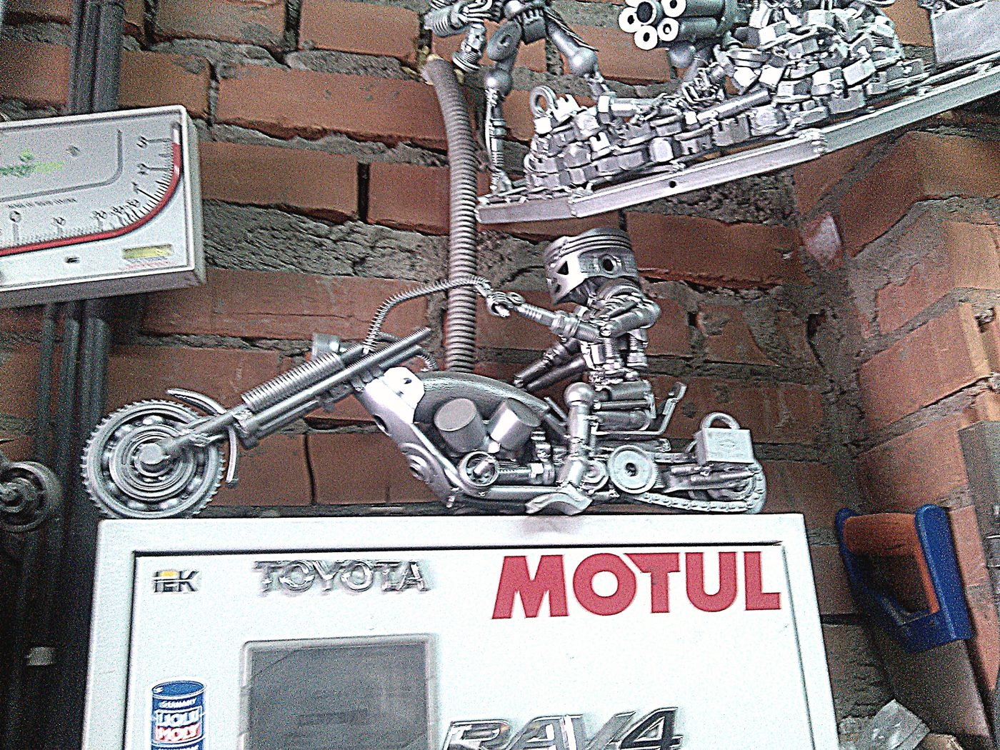
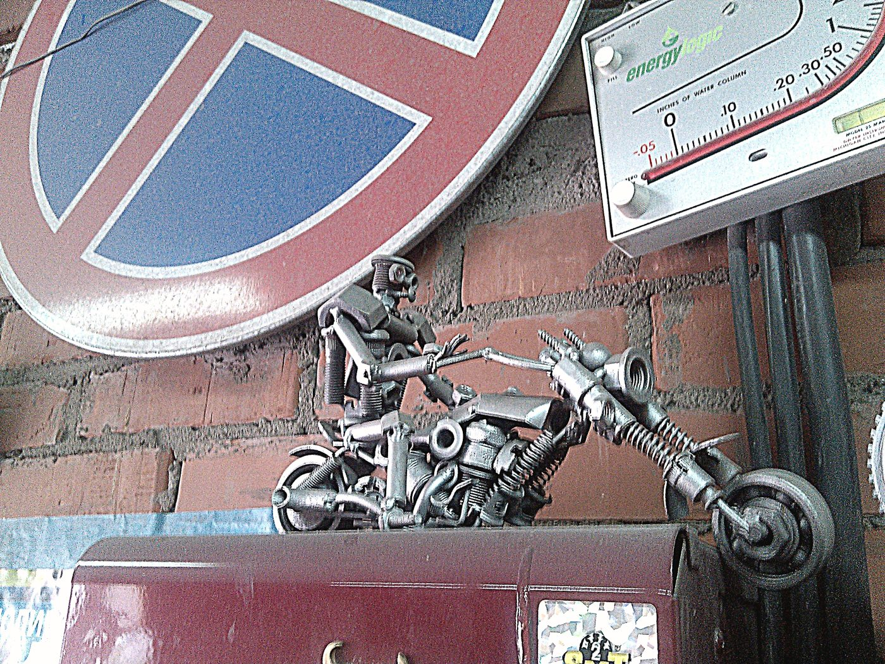

Ходовая и развал
Стойки, рычаги, сайлентблоки, ступицы. После ремонта — сход-развал, иначе смысла в ремонте мало.
Автосервис · Калининский район
Ходовая, развал-схождение, масло, выхлоп, кузов и сварка. Маленькое СТО у дома, куда можно заехать сегодня. И где, по словам наших клиентов, лишнего не навязывают, а если работа не наша — скажут прямо и подскажут, к кому.

Как мы работаем
Самый частый способ обмануть в сервисе — заменить то, что ещё живое, и рассказать об этом словами. Поэтому у нас простое правило: то, что сняли, вы видите; то, что ставим, вы видите тоже — в упаковке и до установки.



Стойки, рычаги, сайлентблоки, ступицы. После ремонта — сход-развал, иначе смысла в ремонте мало.

Не на улице и не «по-быстрому у ворот». Это медленнее, но иначе нормально не сделать.

Вмятины, покраска, полировка, сварочные работы — в соседнем боксе, но это тоже мы.
Мелочь, но наша
На стене цеха стоят фигурки, собранные из гаек, болтов и головок: мотоциклы, человечки, инструмент, ставший скульптурой. Их никто не заказывал — это просто то, что делают руками в свободную минуту.
К качеству ремонта это отношения не имеет. Но по такой мелочи обычно понятно, работают здесь «на поток» или всё-таки с интересом к железу.



Что делаем
Стойки и амортизаторы, рычаги, сайлентблоки, шаровые, ступичные подшипники, стабилизатор.
После замены элементов подвески и после любого удара по колесу. Делается на стенде, а не «на глаз».
Двигатель, коробка, фильтры. Своё масло привезти можно — скажем, подходит оно или нет.
Ремонт и замена участков, гофры, банки. Варим, а не только меняем в сборе.
Вмятины, покраска, полировка, сварка. Небольшие работы и восстановление после мелких ДТП.
Мы не берёмся за всё подряд. Если задача не наша, скажем сразу и подскажем, к кому съездить, — так и в отзывах пишут.
Честно
«Колесо на улице не снимают, принципиально. Помочь отказались, перекур был»
Отзыв в 2ГИС на одну звезду, 30 июня 2024
Мы работаем в боксе, на подъёмнике и с нормальным инструментом. Снимать колесо на асфальте у ворот — это домкрат, грязь и риск сорвать резьбу или уронить машину. Мы этого не делаем и делать не будем.
Ему просто отказали, да ещё и в перекур. Отказ и объяснение — разные вещи: можно было сказать, через сколько освободится бокс, или подсказать ближайший шиномонтаж.
Если мы вам не подходим по времени или по задаче, вы должны узнать это в первую минуту разговора — вместе с тем, куда ехать вместо нас.
Отзывы · 4,5 из 5 по 84 оценкам в 2ГИС
«Всегда быстро примут без мучительных записей „через недельку“»
Надежда · Hyundai Creta · отзыв в 2ГИС, 30 июня 2024
Два года обслуживаю машину у них. Всегда всё расскажут, покажут, успокоят, если где-то что-то мне наговорили лишнего. А бывали случаи, что экстренно пришлось обратиться к другим СТО — и те приписывали много левого.
Александра · 4 июля 2024
Если они что-то не делают, то отправят к другим ребятам. В соседнем боксе ребята делали бампер — им тоже огромное спасибо.
Александра · 4 июля 2024
На простом языке всё расскажут, не навязывают услуги, всё чётко и по делу. Сегодня в очередной раз меня спасли.
Надежда · 30 июня 2024
Здесь работают хорошие ребята, и слаженный, стабильный коллектив это доказывает. Многие на районе хорошо отзываются о данном СТО.
Александра · 28 мая 2025
Контакты